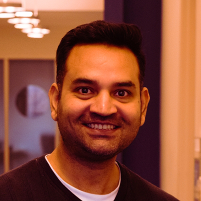

MOODS Team
The MOODS app, software, and website are developed by the software engineers, staff, and doctoral students at the MD2K Center of Excellence at The University of Memphis.
The office of legal counsel at the University of Memphis contributed with appropriate documents, consent/waiver forms, and the legal framework. The Information Technology Services at the University of Memphis hosts the mContain servers and MD2K’s cloud infrastructure.
The following individuals and groups contribute to the mContain initiative.
MOODS Leadership

Santosh Kumar, Ph.D., Lillian & Morrie Moss Chair of Excellence Professor in Computer Science, University of Memphis. As the MD2K Center Director, Santosh oversees all aspects of the MOODS project.
MOODS Software
Tim Hnat, Ph.D., Chief Software Architect. Tim designs and oversees the overall software architecture, leads the app and cloud development efforts for collecting data, converting this to encounters, and producing publically available visualizations for the community. He also coordinates with leadership and external groups regarding the functionality and benefits of this app and platform.

Anandatirtha Nandugudi, Ph.D., Data Science Engineer. Anand develops the user-experience components of the app and develops the data collection and analytic modules for the iOS app.
Nasir Ali, Ph.D., Research Assistant Professor. Nasir architects and develops the cloud platform (called Cerebral Cortex) to collect and process the data. He also integrates algorithms and analytics developed by the doctoral students in processing pipelines on the MD2K Cerebral Cortex cloud.
MOODS Graduate Students
The following doctoral students at the MD2K Center of Excellence develop the algorithms that compute various analytics for visualizations and stress processing

Sameer Neupane contributes to prior works and research challenges related to app design, authenticity of test results, and evaluation of mContain.
Mithun Saha contributes to research challenges in communicating authenticity, design details and evaluation aspects of mContain.

Azim Ullah develops algorithms to compute the proximity among app users based on their Bluetooth and location data. He also develops algorithms for computing aggregate statistics from the proximity and contacts that are used for visualization.

Soujanya Chatterjee contributes to the design and development of the mContain backend, specifically the algorithms for processing of the GPS data and analytics of social crowding.
MOODS Administration

Joe Biggers, Director of Operations. Joe coordinates the work of the entire mContain team, handles communication with external stakeholders and enquiries.

Shahin Samiei, Associate Director for Research & Studies. Shahin directly supports the user privacy aspects of the mContain app, compliance with various local, state, and federal laws regarding health data, and coordinates with the office of legal counsel to develop user consent/waiver forms as well as acquisition of test results.